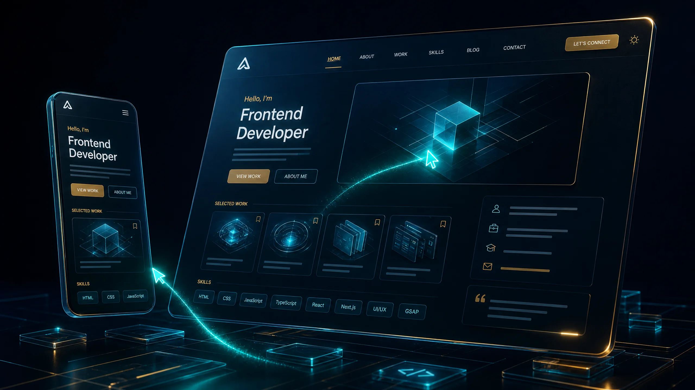

Useful by design
I start with the real problem, not the loudest feature.
Available for selected collaborations
I’m MD Rashidul Islam (Rifat), a self-taught Full-Stack AI Engineer from Narsingdi, Bangladesh. I turn complex AI ideas, automation workflows, and interface problems into practical software people can use.
Where the work leads
I turn complex AI ideas into practical systems people can use.
A featured deployment
MRI PDF Archive Vault · Live Bot3+ shipped projects. No signup needed.
Built with care, tested in the real world.
Narsingdi, Bangladesh · UTC +6
Python · LLMs · RAG · Telegram · JavaScript
rifat@studio:~$ init portfolio --interactive
MD Rashidul Islam (Rifat) — a self-taught Full-Stack AI Engineer building useful Telegram bots, LLM integrations, automation systems, and responsive web interfaces.
The engineer behind the systems
I’m MD Rashidul Islam (Rifat), a self-taught Full-Stack AI Engineer from Narsingdi, Bangladesh. I build Telegram bots, LLM workflows, automation tools, and responsive interfaces that make complex technology feel practical.
My work sits where engineering discipline meets product clarity: Python and SQLite on the backend, modern HTML, CSS and JavaScript on the frontend, and API-first AI systems in between. Working across Android through Termux and a Windows workspace has taught me to value clear architecture, reliable behavior, and software people can genuinely use.
I start with the real problem, not the loudest feature.
I shape complex systems into interfaces people can understand.
I care about dependable delivery, thoughtful details, and steady iteration.
Explore my capabilitiesOpen to focused collaborationsStart a conversation
{
"name": "MD Rashidul Islam (Rifat)",
"role": "Full-Stack AI Engineer",
"location": "Narsingdi, Bangladesh",
"specializations": [
"Telegram Bot Architecture",
"LLM API Orchestration",
"Python Automation Utilities",
"Full-Stack Web Interfaces"
],
"status": "Ready for hiring"
}What I can build
Choose a starting point or bring a workflow that needs a clearer, more useful shape. I work from the problem outward, keeping the first version focused and ready to grow.
Useful assistants, document tools, search flows and conversational bots that live where your users already work.
Purpose-built OpenRouter and DeepSeek workflows with prompt design, sensible fallbacks and human-readable results.
Small utilities that remove repetitive work, protect important state and make everyday operations easier to repeat.
Editorial landing pages, portfolios and focused web experiences with clear hierarchy, responsive behavior and deliberate motion.
Founders, small teams and independent builders who need a practical first version without unnecessary noise.
Discuss a build →Try the toolkit
Different product questions need different engineering paths. Choose a track to see how I approach the work, from first scope to a stable interface people can actually use.
A clear system before a clever feature
I break a product into dependable layers—interfaces, data, integrations, and access rules—so a project can grow without becoming fragile.
Models are components, not the product
I connect OpenRouter, DeepSeek R1, and other model APIs to workflows that have useful prompts, clear fallbacks, and a human-readable result.
Make repetitive work disappear
From file indexing to scheduled backups and reading progress, I build Python utilities that reduce friction and keep the important state safe.
A fast interface should still feel considered
I use HTML, modern CSS, and vanilla JavaScript to create responsive interfaces with deliberate motion, clear hierarchy, and accessible interactions.
A project is not finished at the first demo
I care about deployment paths, readable code, performance, and the small handover details that make a project easier to maintain.
A strong build starts with a shared picture
I begin by clarifying the goal, constraints, and success criteria, then keep communication focused while the product takes shape.
Selected deployments
A small portfolio, deliberately focused on systems I have actually designed, built, tested, and shipped.
Telegram · Python · SQLite
ShippedTelegram-based PDF storage and retrieval with smart categorization, fuzzy search, reading progress tracking, and automated backups running on Termux.
Proof Live bot + public source code.
DeepSeek · OpenRouter · Telegram
In progressA conversational Telegram chatbot integrating DeepSeek R1 through OpenRouter API for real-time AI conversations inside Telegram.
Proof Active build plan; source release follows completion.

HTML5 · CSS3 · Vanilla JavaScript
LiveA single-page portfolio experience with a custom editorial layout, interactive project rail, animated dust field, responsive navigation, tabbed capabilities, and thoughtful motion built without a framework.
Proof Live interface + public source code.
See the system in motion
Before a client opens Telegram, this small interactive preview shows the core loop: search a library, retrieve a file, and keep the system useful under everyday pressure.
Simulated walkthrough · no Telegram message is sent from this preview.
What the client sees
Fuzzy search, categorisation, reading progress and automated backups are presented as one calm workflow. The live bot remains one click away when the preview has done its job.
Optional uptime monitoring can be connected later through a public JSON status endpoint; no uptime percentage is invented here.
Before / after
A project story is more useful when it shows the change in the workflow—not only the feature list.
Important PDFs lived in a growing library where imperfect memory made retrieval slow and repeatable work easy to postpone.
Telegram, fuzzy matching, metadata, reading progress and backups turn storage into a calmer, searchable system.
How I think through a build
A deeper look at the decisions behind each project: what made the problem real, which trade-offs mattered, and how the first useful version took shape.
A document workflow designed around the moment a file needs to be found, not merely stored.
A growing PDF library was becoming harder to search, organise and revisit.
Start where the user already works, then remove the repeated steps that slow retrieval down.
Use Telegram as the interface, SQLite for durable state, and fuzzy matching for forgiving search.
Keep metadata, file storage, progress and backup behaviour coherent inside a small self-hosted system.
A focused bot workflow with categorisation, fuzzy search, reading progress and automated backups.
A live, usable document vault that turns Telegram into a practical retrieval interface.
Interactive architecture
A compact map of the MRI Vault pattern: interface, state, search, storage and recovery working as one understandable system.
Technical proof
Clients and recruiters can inspect the trade-offs, failure handling, security posture and lessons learned—not only the polished surface.
09:41 Search: “MRI workflow”
09:41 12 results found.
Ranked by fuzzy match, category and progress.
Safe embedded preview · no external Telegram session or private data is loaded.
Public work signal
This widget reads public GitHub repository data in the browser. It shows a current snapshot of shipped work and recent repository movement without pretending to expose private contribution data.
Open-source timeline
A structured public-work signal: repository, current state, documentation, reusable utilities and the next visible milestone.
Telegram archive workflow with fuzzy search, SQLite state, reading progress and backup behavior.
Repository ↗DeepSeek R1 through OpenRouter, with response clarity, fallback planning and a focused chat loop.
Release follows completionStatic HTML, CSS and JavaScript patterns for accessible dialogs, filtering, PWA caching and honest analytics.
Repository ↗Field notes
Short technical notes about the decisions behind the work. They are intentionally compact: useful enough to start a conversation, open enough to invite a deeper one.
Search becomes useful when a person does not need to remember the exact title. I think about the user’s imperfect query first, then combine normalised text, close matches and useful metadata so the result feels forgiving without becoming mysterious.
Working across Android and Windows keeps the engineering question honest: can the system run, recover and remain understandable outside a perfect setup? Termux makes that constraint visible, which often leads to simpler choices and clearer handover notes.
An LLM is a component, not the product. The useful layer is the workflow around it: a focused prompt, predictable fallbacks, a place for state, and an interface that makes the answer understandable enough to act on.
Now building
A small changelog keeps the portfolio honest: active work, the next milestone and what is deliberately still in progress.
Connecting a focused Telegram conversation flow to DeepSeek R1 through OpenRouter.
Next milestone · refine response flow and publish source when ready.Keeping search, retrieval, reading progress and backup behavior dependable in the live workflow.
Next milestone · continue improving retrieval clarity from real use.Adding proof, accessible interactions and clear pathways for the next collaboration.
Next milestone · publish verified notes and outcomes over time.Command surface
A small command-line directory for visitors who prefer to explore through the same `rifat@studio:~$` language used across the portfolio.
rifat@studio:~$ help
Available commands: help, projects, skills, notes, contact, github, clear.
Commands are simulated locally; no system access is requested.
Compare the work
Compare the three public project directions by problem, stack, status and proof path.
Project fit 2.0
Share the shape of the project and get a practical service recommendation, starting scope and relevant case study—not a vague service list.
Interactive project brief
Answer a few practical questions and generate a structured brief you can download, email or open in Telegram before the first conversation.
Generated brief
Answer the questions and generate a brief to unlock the export and share actions.
Performance posture
No invented score is published here. Instead, these are the verifiable implementation choices that keep the site ready for a real audit.
Project artwork, portrait and résumé paths are packaged with the site.
Non-critical project images use lazy loading and async decoding.
Reduced-motion and Save-Data modes disable non-essential canvas activity.
Keyboard focus rings, skip link, labelled forms and dialog focus return are included.
Manifest metadata and a versioned service worker cache the core shell for repeat visits and offline fallback.
Verified feedback only
“I only publish feedback from people who have actually used the work.”
There are no invented testimonials here. As beta users and collaborators share permissioned feedback, this section becomes a record of real outcomes rather than decorative praise.
Share verified feedback →Usually replies within 24–48 hours · Narsingdi, Bangladesh · UTC +6
Availability calendar
Current availability, the next opening and the response target are shown as a planning signal—not a guaranteed booking promise.
AI bots, LLM workflows, Python automation and focused interfaces.
Discovery calls are arranged after a short project brief.
Send the goal, platform, constraints and desired first version.
Client portal preview
This static-safe preview shows the intended client experience: brief, milestones, files and handover notes. Production authentication and private storage must be connected through a protected backend before confidential data is used.
Active brief
Focused first version: searchable PDF retrieval with a clear backup path.
Tools I work with
Used in DeepSeek Bot and MRI Vault
Used in MRI PDF Archive Vault
Used in Personal Portfolio Website
Used across every case study
Every layer is chosen to make the final system clearer, faster, and more useful.
The working method
Analyze the requirement, define the core architecture, and agree on what a successful first version should do.
Build an early MVP to validate API integrations, database structure, interaction patterns, and performance assumptions.
Write clean, maintainable Python and web code with a focus on reliability, accessibility, and asynchronous execution where it helps.
Deploy the work with clear handover notes, then stay available for post-launch assistance and practical refinements.
Clarifications
I focus on Telegram bots, Python automation tools, LLM API integrations, and modern responsive websites.
I am a self-taught developer actively building my portfolio through real, shipped projects with a focus on reliability and clean code.
I work with OpenRouter API to integrate models such as DeepSeek R1 and GPT models into useful applications.
We begin with the goal, constraints and first useful version. I then map the workflow, agree on scope and build a focused prototype before expanding the system.
Owner console
Open this panel with ?analytics=1. Static mode shows only this browser’s locally stored events. Add a protected JSON endpoint for real site-wide analytics; never place admin credentials in client-side code.
No local events recorded yet.
For real traffic analytics, connect a privacy-conscious provider or protected endpoint.
Get in touch
Have a project idea, a workflow worth automating, or a product that needs a sharper interface? Send a message directly or find me through the links below. I usually reply within 24–48 hours.